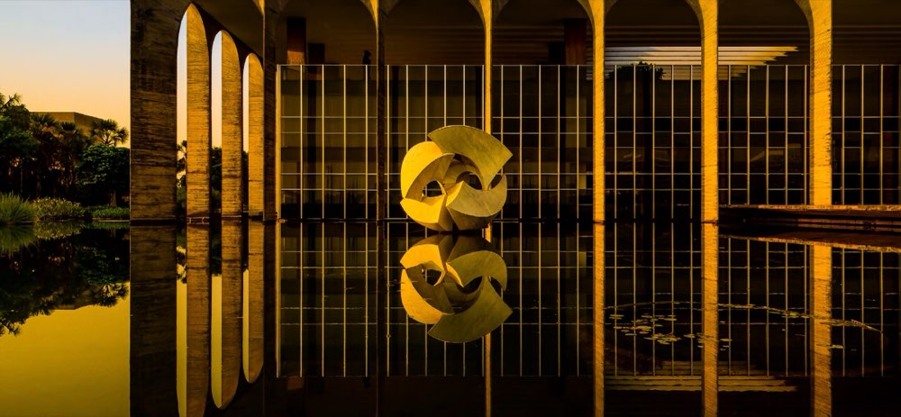

Architecture / Aerial
Brasília
Project 01 / 09
Brasília
Concrete, sky and water in Brasília, from the curved ribs of the Cathedral of Brasília to the arches of Itamaraty Palace. Sweeping aerials sit beside black-and-white studies of towers, stairs and facades. 17 photographs